蓝莓叶黄素酯含片 冰睛玉睫
修正集团唯一官方指定事业部
来自印度半岛绿色庄园的蓝莓
独创包埋技术工艺 更加有效利用于靶向吸收
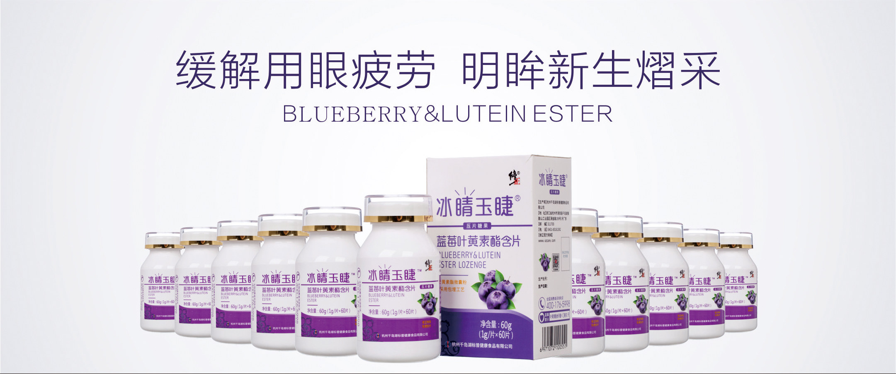
产品信息
Product Information
你的眼睛还好吗？
加班熬夜
长时间看手机、电脑
每天戴美瞳、隐形眼镜
让双眸告别疲劳，重焕明亮动人神采
抗糖化 改善眼白发黄 视力模糊
缓解用眼疲劳 改善干涩发痒
提升 紫外线 蓝光损伤 抵御力
保护视力 预防眼部疾病
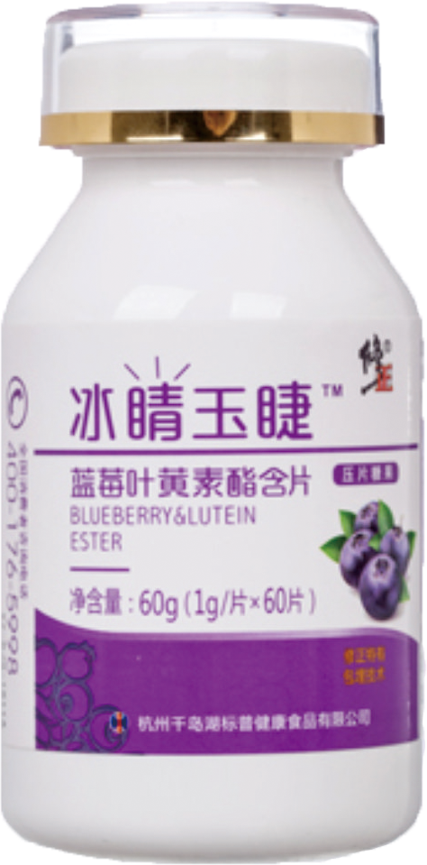
解锁明眸新生奥秘
轻松KEEP年轻 “睛” 采
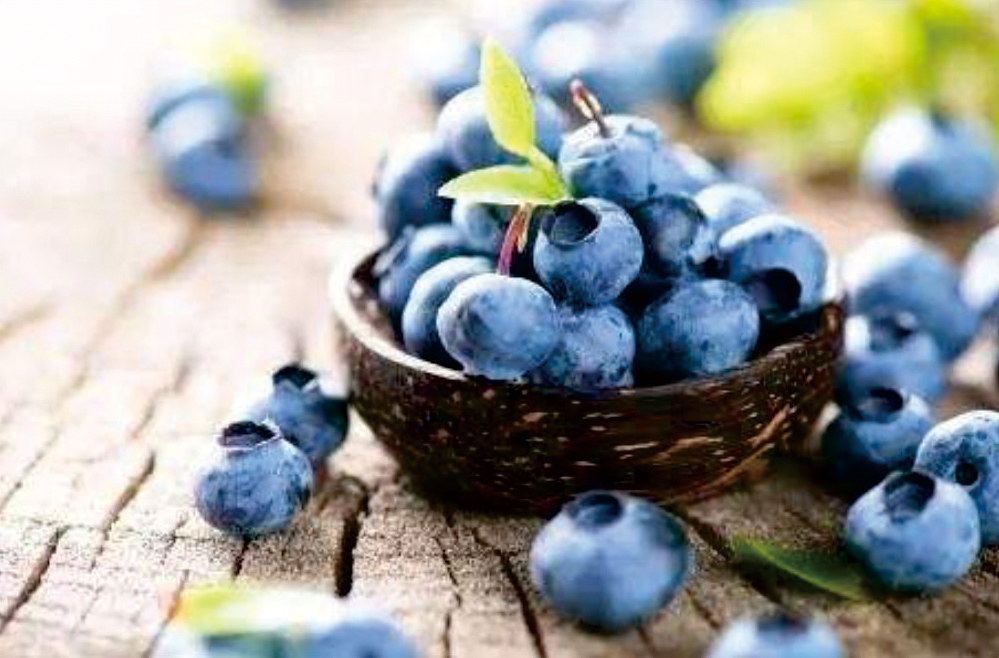
丰富的健康元素 超高花青素含量为您健康增添力量
蓝莓果实中含有丰富的营养成分，尤其富含花青素，它不仅具有良好的营养保健作用，还具有防止脑神经老化、强心、抗癌、软化血管、增强人体免疫力等功能。
1. 蓝莓含有 “花青素” 能保护眼睛
2. 可以抑制传染病
3. 可以帮助我们补充纤维和钾元素
4. 可以抗氧化 延迟衰老
5. 可以增强记忆力
“北美红宝石” 8倍天然VC及SOD酶独创包埋技术提取 靶向吸收
主要生长在北半球等凉爽地带酸性泥炭土壤中，与康科特葡萄和蓝莓并称为北美传统三大水果。蔓越莓具有高水分、低热量、高纤维、多矿物质的特点备受人们的青睐。
1. 减少心血管老化病变
2. 抗老化 预防老年痴呆
3. 养颜美容 保持肌肤年轻健康
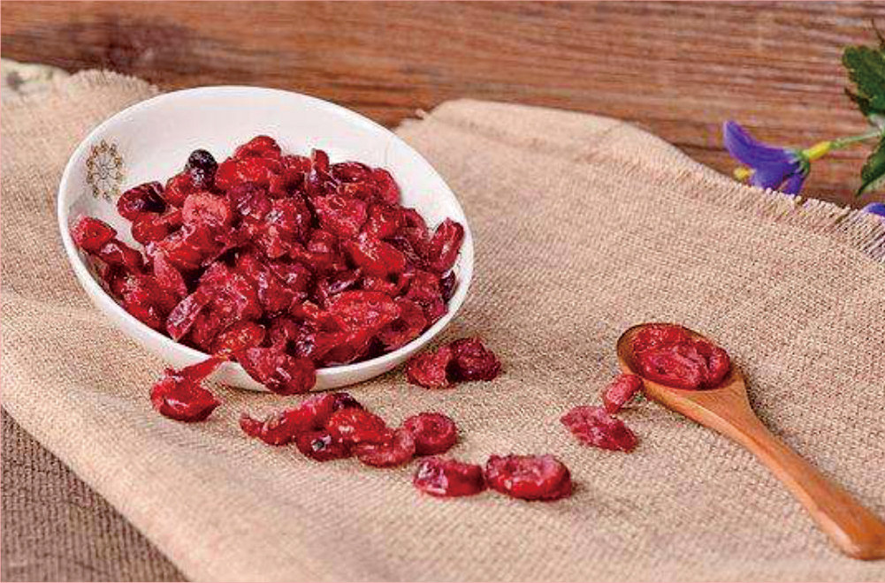
更多营养元素补充
带给您清晰明亮的每一天
维生素A
维持夜间视力
辅助皮肤黏膜健康
具体解决眼睛干
涩的功效
维生素C
抗氧化 抑制黑色素产生
促进胶原蛋白的形成吸收
保障视网膜
角膜正常运行
SOD
超氧化物歧化酶
因自由基作用而导致的炎症
自身免疫力
心脑血管显著疗效
维生素E
防止视网膜和
黄斑部脂质氧化
保障眼部机能
正常运作
叶黄素
1. 叶黄素是天然提取物，没有任何副作用
2. 视网膜的主要色素成分，人体无法制造，必须靠摄入叶黄素补充
3. 保护眼睛不受光线损害，延缓眼睛的老化及防止病变
4. 抗氧化，有助于预防肌体老化
5. 缓解视疲劳症状、视网膜模糊、眼干涩、眼胀、眼痛、畏光等
6. 提高黄斑色素密度，保护黄斑，促进黄斑发育
7. 预防黄斑变性及视网膜色素变性
8. 减少玻璃膜等产生，预防AMD的发生
适用人群
适合长时间看电脑屏幕、手机屏幕，或者喜欢阅读的您。
适合长时间佩戴隐形眼睛、美瞳的人士。
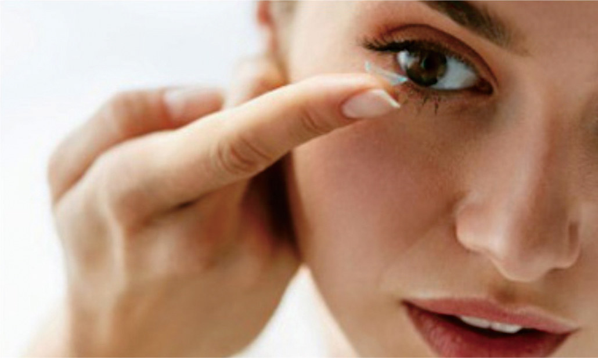
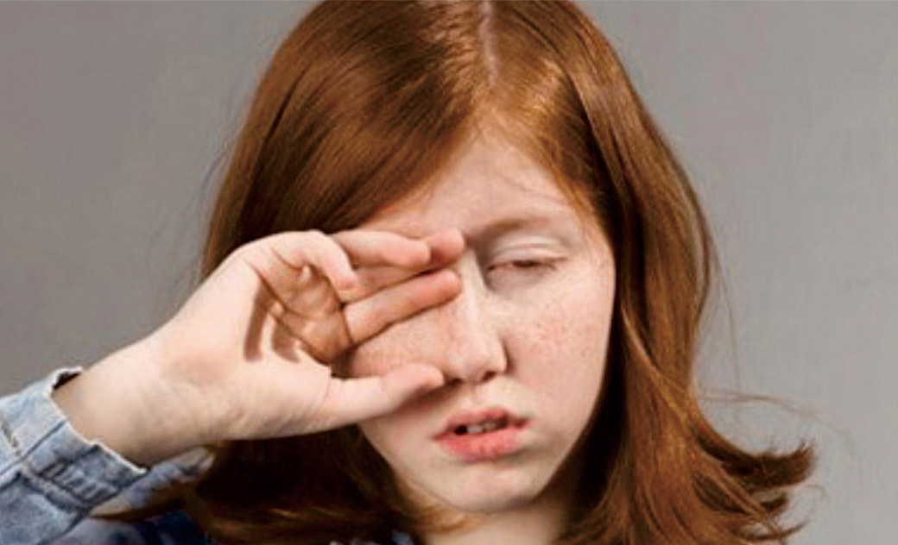
适合偶发性眼花、傍晚视力下降的人食用。
口碑臻品 来自爱用者的感动
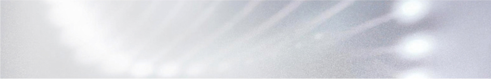
因为工作的原因，要一天盯着电脑，而且下班后也不忘盯着手
机玩，所以眼睛经常会模糊、酸疼，感觉视力严重下降。一年
前开始接触修正冰睛玉睫每天晚上睡觉前吃两粒，明显觉得眼
睛不再模糊，早上起床会觉得眼前很亮，也不会经常干涩！
--@兔子的肉酱酱
冰晴玉睫真的是内服保养中特别值得推荐的！戴了十年多眼
镜的我，深知眼睛的重要性。这款产品我也是抱着吃吃看的态
度，但试过之后，頁的感到惊喜，三个月吃下来，①不会拿手
去揉眼睛，真的一次都没有做过这个动作；②眼白变清澈，不
浑浊；③眼睛长时间面对手机电脑，不容易觉得疲劳。一定要
珍惜眼睛，毕竟现在是用眼过度的时代。
--@鑫哥
修正药厂直拍
• 官方直供 正品保证 •

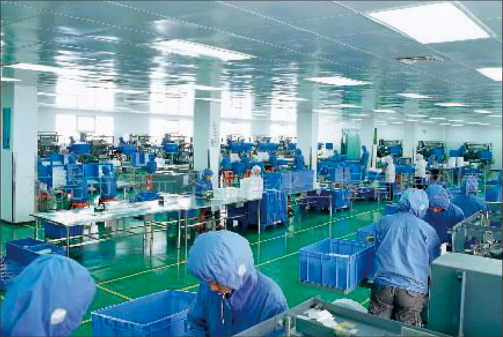
品牌故事
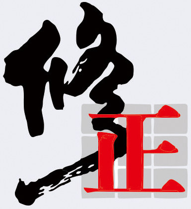
修正药业集团（简称修正药业）
始创于1995年5月，集科研生成营销于一体
集团总部设在长春，营销总部设在北京
“修正、通药、斯达舒”三个国家级驰名商标
全国中药企业利润第一，销售和利润中国医药行业前十
1 品质管控
特别考虑到是关乎消费者健康到入口食品我们坚持国际制药产品的产品管控。为中国消费者提供安全健康有效的产品。产品不涉及任何贴牌代工等问题，受国家有关部门管理。
2 安心保障
本事业部销售的修正倍视康产品出自修正制药厂高规格生产线。出厂并经过严格的审查，厂家库房直邮到顾客手中。
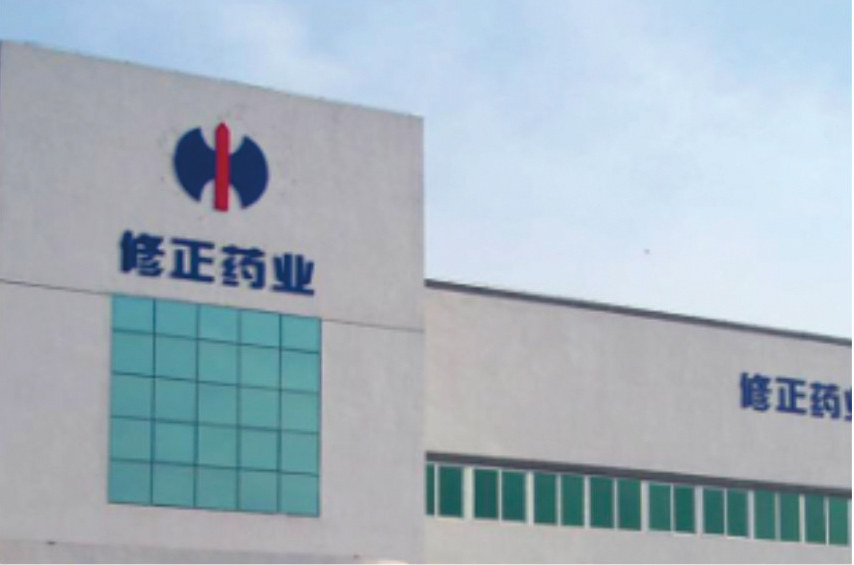
3 官网认证
本事业部作为修正冰睛玉睫的唯一官方销售渠道，绝对保证产品品质与安全未经授权的任何销售渠道及门店请慎重购买。
官方授权 正品保证
追求卓越只为给你更好
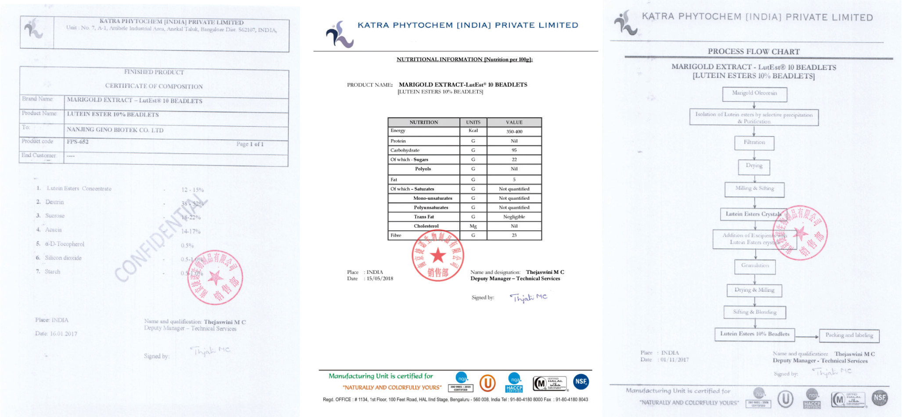
原料进口配料表
工艺流程表
营养成分表